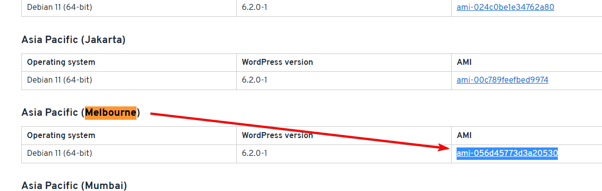

AWS Waf
Overview
We’re going to be creating an EC2 instance running WordPress, we’ll put an Application Load Balancer in front of it, and then associate an AWS WAF WebACL with that load balancer.
We’ll then explore the different rules and actions we can configure, as well as setting up WAF logging to S3 and viewing those logs.
We will be creating this environment in the ap-southeast-4 (Melbourne) region, so all links to the console will be there. Make sure you change region if you’re deploying elsewhere.
Instructions
Stage 1 - Creating the WordPress instance
First, we need to get the AMI of the latest version of WordPress. These AMIs are created by Bitnami and are made available for free. Head to this website to get the latest AMI for your region: https://bitnami.com/stack/wordpress/cloud/aws/amis
Scroll down to the region you’re using, and copy the AMI ID

Head to the EC2 console: https://ap-southeast-4.console.aws.amazon.com/ec2/home
Go to Instances and click Launch instances

Set the Name to “wordpress”
Under Application and OS Images (Amazon Machine Image) enter the AMI you copied earlier and press Enter
In the window that pops up, go to the Community AMIs tab, and click Select next to the AMI result

Leave the Instance type as default (it should be t2.micro or t3.micro, which is free tier eligible)
Set the Key pair (login) to “Proceed without a key pair (Not recommended)”. We won’t need to access this instance.
Under Network settings, click Edit

We’re going to use the default VPC, so you just need to make sure that is the VPC selected, and Auto-assign public IP is enabled

Under Firewall (security groups), leave “Create security group” selected, and change the Security group name to “wordpress-waf”
Under Security group rule 1, change the Type to HTTP

Leave everything else as default, and click Launch instance
Once that’s done, head back to the EC2 console: https://ap-southeast-4.console.aws.amazon.com/ec2/home
Go to Instances, and copy the public IPv4 address of your new instance

Visit that IP in your browser, and you should see the default WordPress home page. You may need to wait a couple of minutes for your instance to finish booting. Also, make sure you’re visiting http://

Stage 2 - Creating a target group
Head to the EC2 console: https://ap-southeast-4.console.aws.amazon.com/ec2/home
Go to Target Groups and click Create target group

Leave the Target Type as “Instances”
Set the Target group name to “wordpress”

Leave everything else as default, and click Next
Select the instance we created in the previous step, and click Include as pending below

Click Create target group
Stage 3 - Creating a application load balancer
Head to the EC2 console: https://ap-southeast-4.console.aws.amazon.com/ec2/home
Go to Load Balancers and click Create load balancer

Select “Application Load Balancer”

Set the Load balancer name to “wordpress-lb”
Select all the subnets under “Network mapping”, and make sure the VPC is set to default (-)

Under Security Groups, add the “wordpress-waf” security group we created in stage 1


Under Listeners and routing, change the “default action” for HTTP to forward to the target group we created in the previous step

Click Create load balancer
Once that’s done, go back to Load Balancers and copy the DNS name for your newly created load balancer

Visit that URL in your browser (again, HTTP only). You should see your WordPress home page still.
Note: ALB’s can take a couple of minute to create and become ready

Stage 3 - Creating an S3 bucket for WAF logs
Head to the S3 console: https://s3.console.aws.amazon.com/s3/buckets
Go to Buckets and click Create bucket

S3 buckets for WAF logs must begin with aws-waf-logs-, so in my case I’m going to use the bucket name aws-waf-logs-demo-waf. Remember S3 bucket names are unique so this may be taken, just pick another bucket name that begins with aws-waf-logs-
Make sure the region is set to the same region your EC2 instance was created in.
Leave everything else as is, and click Create bucket
Stage 4 - Setting up the WAF
Head to the WAF console: https://us-east-1.console.aws.amazon.com/wafv2/homev2
In each step in this stage, make sure your region remains set to the region your instance is deployed in. For me that is “Asia Pacific (Melbourne)”

First, we’re going to create an IP Set, which is basically just a list of IP addresses grouped together, these are commonly used for allow-listed IPs (e.g. your home or office IPs, your developers, etc). IP Sets can contain up to 10,000 CIDR ranges, which makes allowing or blocking large numbers of networks very easy.
In a new tab, open the following URL: https://checkip.amazonaws.com/

This will give you your IP address as seen by Amazon. This is useful if your work PC has a split-horizon VPN for example, where only AWS traffic is routed over the VPN.
Copy this IP address down for the next step.
Go to IP sets and click Create IP Set

Set the IP Set name to “home-ip”
In the IP addresses box, add the IP you copied earlier followed by /32, so in my case 34.129.222.183/32

Click Create IP set
Go to Regex pattern sets and click Create regex pattern set

Set the Regex pattern set name to “no-wp-files”
In the Regular expressions box, enter:
(wp\-login\.php)$
(.*wp\-config.*)
(xmlrpc\.php)

Click Create regex pattern set
Go to Web ACLs and click Create web ACL

Set the Name to “wordpress-acl”
Under Resource type select “Regional resources”
Under Associated AWS resources click Add AWS resources

Select “Application Load Balancer” (different regions will have different options), and select the ALB we created earlier

Click Add
Click Next
Under Rules, click Add rules and then Add managed rule groups

Expand AWS managed rule groups and you will see a list of WAF rule groups that are supplied and maintained by AWS.
Under Free rule groups select the following

Each rule group has a description showing what kind of attacks the rule group helps protect against.
Considering we’re running a WordPress application, we definitely want the WordPress rules, and WordPress is built using PHP, so we want the PHP application rules as well. Our database for WordPress is MySQL, so the SQL database rule set will help protect against SQL Injection attacks (among other things)
The “Core rule set” contains the most rules, and protects against common attack methods provided by the open source OWASP organisation (https://owasp.org/)
Note each rule group has a “capacity” value. Each Web ACL has a maximum capacity of 1500 “WebACL Capacity Units” (WCUs), and each rule we add uses up some of those units. “Core rule set” contains the most rules, so therefore is the most expensive at 700 WCUs. This limit is in place to prevent traffic inspection from taking too long (among presumably other reasons on AWS’ side).
You’ll also see some other 3rd party rule groups provided by external security organisations. These are usually paid subscriptions that you subscribe to via the AWS Marketplace. We won’t be using these in this demo.
Click Add rules

On the next page, you can see it is telling us we’ve used 1100/1500 WCUs. We’re going to add more rules later, so this is fine.
Under Default web ACL action for requests that don't match any rules leave this set to “Allow”. In our case, we only want traffic that matches one of our rules to be blocked, but if this was reversed and we had an application we only wanted to be accessed by specific IP addresses for example, we would change this to “Block”.
Click Next
On the next page, we can change the priority of our rules. Similar to Network ACLs, rules within a Web ACL are executed in order of top to bottom. For now, we’ll leave these as is.

Click Next
On the next page, make sure Request sampling options is enabled, and click Next

On the final page, click Create web ACL
On the next page, click on your newly created Web ACL

Go to the Logging and metrics tab and click Enable under Logging

Change the Logging destination to “S3 bucket”, and select your S3 bucket from the dropdown. There should only be one because the dropdown will only show buckets beginning with aws-waf-logs-

In a production environment, you might want to redact certain fields such as an authorisation header, a query string, the HTTP method, etc. But for this demo we will leave these unselected.
Click Save
Stage 5 - Testing our WAF
Open your ALB URL in a new tab (this will be something like http://wordpress-lb-1275728828.ap-southeast-4.elb.amazonaws.com/ that we visited earlier).
Your WordPress homepage should still be viewable. You can visit the sample blog entry (/sample-page/), and the admin login (/wp-admin)
Let’s try and use a very basic SQL Injection attack on our website and see if the WAF stops us, go to the page: /wp-login.php?user=1+ORDER+BY+10
You should see a “403 Forbidden” message

This means our WAF rules are working as expected.
If you head back to the WAF console: https://us-east-1.console.aws.amazon.com/wafv2/homev2/
Go to Web ACLs and into the wordpress-acl we created (if your ACL doesn’t show up, make sure the region is set correctly)

Then under Sampled requests, if you search for your IP address from earlier you should see a few of the requests you made, and their Action (allow or block) and the rule that caused any block actions

Sampled requests can take a few minutes to appear, and not all requests will appear (only certain requests are sampled and displayed).
You will possibly also see various other requests from random other IP addresses that scan the internet, usually looking for vulnerable websites.

Stage 6 - Adding custom rules
We don’t want our WordPress login page or XML-RPC page being accessed by anyone, so we’re going to use our regex pattern we created earlier to block any requests to /wp-login.php or /xmlrpc.php
Head to the WAF console: https://us-east-1.console.aws.amazon.com/wafv2/homev2
Click on your WordPress Web ACL

Go to the Rules tab then click Add rules then Add my own rules and rule groups

Leave Rule Type as “Rule builder”
Set the Rule Name to no-wp-files (you can call this anything you like, but for the demo we’ll use this)
Leave the Type as “Regular rule”. We could set this to a “Rate-based rule” to prevent bots from trying hundreds or thousands of different passwords on our wp-login.php page, but we won’t for this demo.
Set Inspect to “URI Path”

Set Match Type to “Matches pattern from regex pattern set”

Set Regex pattern set to the pattern set we created earlier (it should be the only one there)

Set Text transformation to “Lowercase”

What this does is changes everything in the “Inspect” field (in our case, the URI Path) to lowercase. This is useful if you wanted to look for /wp-login.php, /WP-LOGIN.PHP, or even /Wp-LoGiN.PhP, WAF would see all of these as /wp-login.php. There are (as you can see) multiple other transformations such as compressing white space, decoding URL characters, Base64 decoding strings, etc, and you can have multiple of these.
Under Action, select “Block”
Click Add rule
On the next page, we need to move our new rule to the top of the priority list. Remember rules are executed in order of top to bottom.
Select your new rule, and keep clicking Move up until it’s at the top of the list.

Now if we head back to our website, and try accessing the /wp-login.php page, or /wp-admin, we will get a 403 Forbidden message

We can also try /xmlrpc.php, which will give us a 403 Forbidden as well.
And if we head back to our WAF console, and go to the Overview tab, after a few minutes you should see your IP address, the URI’s you tried to access, and the action “Block”, note the Metric name also shows the name of the rule that was used.

Now, because we trust our home IP, we’re going to allow everything from that IP address.
Go to the Rules tab and click Add rules then Add my own rules and rule groups

Set the Rule type to “IP Set”
Set the Rule name to “allow-home”
Change the IP set to the “home-ip” IP Set we created earlier
Leave IP address to use as the originating address as “Source IP address”
Change Action to “Allow”

Click Add rule
On the next page, move this newly created rule to the top of the list

Click Save
Now if we visit the /wp-login.php page again, you should be able to see it.
Note: If you can’t, double check your IP address hasn’t changed since earlier (https://checkip.amazonaws.com/) and if it has, go back to Stage 4 and create a new IP Set (or add your IP to the home-ip IP Set)

Now as a final rule, we only want users in our country to be able to visit our website, so we’re going to geo block all other countries.
Note: Geo blocking can be inaccurate and it’s definitely not uncommon for an IP to be configured as being in the wrong country. If an ISP purchases a block of IP addresses from an RIR (regional Internet registry) or from another ISP, it will usually take time for all of the many Geo IP databases to be updated, and then requires AWS to start using this updated database in AWS WAF, so keep this in mind if geo blocking doesn’t work for you.
We need to do this in two stages, we need a rule that allows our country (in my case, Australia), which will go at the bottom of the rule priority list (because we still want visitors from Australia to be checked by all of our other rules like SQL Injection, not accessing wp-login.php, etc). Then we need another rule that blocks all countries that aren’t Australia.
Obviously you can change this to be whatever country / countries you like.
Go to the Rules tab and click Add rules then Add my own rules and rule groups

Set the rule Name to “allow-au” (or allow-
Change the Inspect option to “Originates from a country in”
Change Country codes to
Change the Action to Allow

Click Add rule
On the next page, leave this rule last and click Save
Go to the Rules tab and click Add rules then Add my own rules and rule groups
Set the rule Name to “block-earth”
Change If a request to “doesn’t match the statement (NOT)”
Change the Inspect option to “Originates from a country in”
Change Country codes to
Change the Action to Block

Click Add rule
On the next page, move this rule up to the second position. We still want our home IP to have access at all times. This is useful if you’re allow listing your companies IP address(es) for example, you don’t want your staff to lose access if there was a geo blocking error.

Click Save
Now we should be able visit our WordPress website still

But let’s test it from another country. To do this, we will use a website speed test service called Pingdom: https://tools.pingdom.com/
Enter your ALB URL, and change Test from to a country that isn’t your country (e.g. I’m in Australia, so I will choose to test from Germany)

Click Start test
After a few seconds the test will complete. Scroll down to Response codes and you should only see 403

So the website loaded quickly, we got an “A” in Performance, but that is because AWS WAF returned essentially an empty page with the words “403 Forbidden”.
If Pingdom offers tests from your country, try running the test again from there, in my case, Australia.

You can see there were no 403 responses, only 200’s (and 302, which is fine).
Stage 7 - Viewing our WAF Logs
Head to the S3 console: https://s3.console.aws.amazon.com/s3/buckets
Go to Buckets and click on your AWS Waf Logs bucket

The directory structure will be:
/AWSLogs/[ACCOUNT ID]/WAFLogs/[REGION]/[WEB ACL]/[YEAR]/[MONTH]/[DAY]/[HOUR]/[5 MINUTE BLOCK]/[LOGS]
Try to go into the directory that was created around the time you were going through the previous steps (using Pingdom), select one of (or the only) log file, and click Download

This will download a log file that is gzipped. MacOS and Linux systems can extract these natively, however Windows PCs will need a program such as 7-Zip (download here).
On MacOS you can simply double click the .gz file, on Windows you will need to right click, go to 7-Zip then Extract here

This will give you a .log text file. Open it up in whichever text editor you’re comfortable with, I’ll use VSCode.
Each log line contains information about that specific request. It can be a bit difficult to read, but you can use a website like https://jsonformatter.org/json-pretty-print to make the JSON log line more readable (note, paste one line at a time on this website). Otherwise, if you have a plugin for VSCode (or your text editor) that can “pretty print” JSON, you can use that.
Here’s an example of one of my log entries, the action is “ALLOW”, and the terminatingRuleId is “allow-home”. This is my home IP address that is allowed as the first rule in the Web ACL.
{
"timestamp": 1680696799239,
"formatVersion": 1,
"webaclId": "arn:aws:wafv2:ap-southeast-4:123456789012:regional/webacl/wordpress-acl/1be732ad-bf31-44d9-8745-4da02eeaac18",
"terminatingRuleId": "allow-home",
"terminatingRuleType": "REGULAR",
"action": "ALLOW",
"terminatingRuleMatchDetails": [],
"httpSourceName": "ALB",
"httpSourceId": "123456789012-app/wordpress-lb/19541f9649c59058",
"ruleGroupList": [],
"rateBasedRuleList": [],
"nonTerminatingMatchingRules": [],
"requestHeadersInserted": null,
"responseCodeSent": null,
"httpRequest": {
"clientIp": "34.129.222.183",
"country": "AU",
"headers": [
{
"name": "Host",
"value": "wordpress-lb-1275728828.ap-southeast-4.elb.amazonaws.com"
},
{
"name": "Connection",
"value": "keep-alive"
},
{
"name": "Cache-Control",
"value": "max-age=0"
},
{
"name": "Upgrade-Insecure-Requests",
"value": "1"
},
{
"name": "User-Agent",
"value": "Mozilla/5.0 (Macintosh; Intel Mac OS X 10_15_7) AppleWebKit/537.36 (KHTML, like Gecko) Chrome/111.0.0.0 Safari/537.36"
},
{
"name": "Accept",
"value": "text/html,application/xhtml+xml,application/xml;q=0.9,image/avif,image/webp,image/apng,*/*;q=0.8,application/signed-exchange;v=b3;q=0.7"
},
{
"name": "Accept-Encoding",
"value": "gzip, deflate"
},
{
"name": "Accept-Language",
"value": "en-AU,en-GB;q=0.9,en-US;q=0.8,en;q=0.7"
},
{
"name": "Cookie",
"value": "wordpress_test_cookie=WP%20Cookie%20check"
}
],
"uri": "/wp-login.php",
"args": "",
"httpVersion": "HTTP/1.1",
"httpMethod": "GET",
"requestId": "1-642d65df-2bcb4716046498c504b1432a"
}
}
Below that, we can see the Pingdom request from German that was blocked by our “block-earth” rule, note the country code under “httpRequest” is “DE” (Germany)
{
"timestamp": 1680696828189,
"formatVersion": 1,
"webaclId": "arn:aws:wafv2:ap-southeast-4:123456789012:regional/webacl/wordpress-acl/1be732ad-bf31-44d9-8745-4da02eeaac18",
"terminatingRuleId": "block-earth",
"terminatingRuleType": "REGULAR",
"action": "BLOCK",
"terminatingRuleMatchDetails": [],
"httpSourceName": "ALB",
"httpSourceId": "123456789012-app/wordpress-lb/19541f9649c59058",
"ruleGroupList": [],
"rateBasedRuleList": [],
"nonTerminatingMatchingRules": [],
"requestHeadersInserted": null,
"responseCodeSent": null,
"httpRequest": {
"clientIp": "35.156.182.26",
"country": "DE",
"headers": [
{
"name": "Host",
"value": "wordpress-lb-1275728828.ap-southeast-4.elb.amazonaws.com"
},
{
"name": "Connection",
"value": "keep-alive"
},
{
"name": "Pragma",
"value": "no-cache"
},
{
"name": "Cache-Control",
"value": "no-cache"
},
{
"name": "User-Agent",
"value": "Mozilla/5.0 (X11; Linux x86_64) AppleWebKit/537.36 (KHTML, like Gecko) Ubuntu Chromium/61.0.3163.100 Chrome/61.0.3163.100 Safari/537.36 PingdomPageSpeed/1.0 (pingbot/2.0; +http://www.pingdom.com/)"
},
{
"name": "Accept",
"value": "image/webp,image/apng,image/*,*/*;q=0.8"
},
{
"name": "Referer",
"value": "http://wordpress-lb-1275728828.ap-southeast-4.elb.amazonaws.com/"
},
{
"name": "Accept-Encoding",
"value": "gzip, deflate"
},
{
"name": "Accept-Language",
"value": "en-US,en;q=0.8"
}
],
"uri": "/favicon.ico",
"args": "",
"httpVersion": "HTTP/1.1",
"httpMethod": "GET",
"requestId": "1-642d65fc-1fbafd367ee9c2b671146b3f"
},
"labels": [
{
"name": "awswaf:clientip:geo:country:DE"
},
{
"name": "awswaf:clientip:geo:region:DE-HE"
}
]
}
You can also see all of our request headers are there, as well as the URI, query strings, etc. Remember these can be redacted from logs files if needed.
Stage 8 - Optional: Custom response bodies
This can be useful if you would prefer a branded or nicer looking response from AWS WAF, especially if a request is being blocked (403).
Head to the WAF console: https://us-east-1.console.aws.amazon.com/wafv2/homev2
Click on your WordPress Web ACL
Go to Custom response bodies and click Create custom response body</kbd

Set the Response body object name to “friendly-block”
Set the Content type to HTML
Set the Response body to:
<!DOCTYPE html>
<html>
<head>
<title>Forbidden</title>
</head>
<body>
<div style="text-align:center;">
<h1 style="color: pink;">Forbidden</h1>
<img src="https://img.freepik.com/free-photo/red-white-cat-i-white-studio_155003-13189.jpg" alt="A red and white cat">
</div>
</body>
</html>
Note: This image may move or be deleted, feel free to replace the image file in <img src= with another image of your choosing.
Click Save
Go to Rules, select the allow-home rule, and click Edit

For demo purposes, we’re going to change this rule to block, so that we can see our custom response.
Change the Action to “block”, and then expand Custom response
Select Enable
Set Response code to 403
Set Choose how you would like to specify the response body to “friendly-block”

Click Save rule
Now if we refresh our WordPress website, we’ll see a much nicer forbidden message

Obviously in a production environment this would likely be company branded, and you would apply it to the other rules that you expect to block users. But for this demo, it was much easier to apply it to our home IP rule just so we could see it.
Stage 9 - Clean up
Head to the WAF console: https://us-east-1.console.aws.amazon.com/wafv2/homev2
Click on your WordPress Web ACL
Go to the Associated AWS resources tab, select your wordpress-lb ALB, and click Disassociate

Type “remove” in the confirmation box and click Disassociate
Go back to Web ACLs, select your Web ACL and click Delete

Enter “delete” in the confirmation box and click Delete
Go to IP Sets, select your home-ip IP Set and click Delete

Enter “delete” in the confirmation box and click Delete
Go to Regex pattern sets, select your no-wp-files pattern set, and click Delete

Enter “delete” in the confirmation box and click Delete
Head to the S3 console: https://s3.console.aws.amazon.com/s3/buckets
Go to Buckets and select your aws-waf-logs- bucket, and click Empty

In the confirmation window, enter “permanently delete” and click Empty
Go to Buckets and select your aws-waf-logs- bucket, and click Delete

In the confirmation window, enter your bucket name and click Delete
Head to the EC2 console: https://ap-southeast-4.console.aws.amazon.com/ec2
Go to Load Balancers, select your wordpress-lb ALB, click Actions then Delete load balancer

Enter “confirm” in the confirmation box, and click Delete
Go to Target Groups, select your wordpress target group, click Actions then Delete

Click Yes, delete in the confirmation box.
Go to Instances, select your wordpress instance, click Instance state then Terminate instance
Be careful and make sure you’re deleting the instance we created at the beginning of the demo.

Click Terminate in the confirmation box.
Go to Security Groups, select the wordpress-waf security group, click Actions then Delete security groups

Click Delete in the confirmation box
Note: If you get an error similar to the following, wait a few minutes for your ALB and EC2 instance to finish terminating, then try again